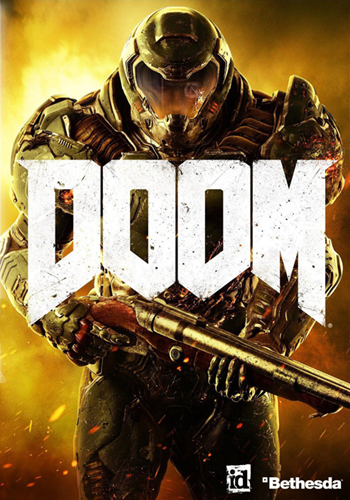

Para a geração de jogadores atual pode parecer estranho saber que em um game tão popular quanto Doom, o protagonista simplesmente não possui nome. O personagem principal nunca teve um nome revelado e nem fala nada durente as partidas. Fãs da série passaram a chamá-lo apenas de “Doomguy”, traduzindo: “Cara do Doom”.
Poucas informações estão disponíveis sobre o personagem, resumindo-se a uma descrição do manual do Doom original em 1993. Ele é um fuzileiro espacial em uma estação em Marte, considerado um trabalho isolado e monótono. Nosso “Doomguy” está lá como uma punição, após ter atacado um superior, o qual ordenou que seu pelotão atirasse em alvos civis.
Apesar de sua participação limitada nos eventos da história fora do comando do jogador, em vários momentos ele é reverenciado como um personagem com forte atitude moral. Constantemente o “Doomguy” faz o certo, sem se importar com as consequências, e se sacrifica pelas pessoas a sua volta.

A história da série Doom começa em Marte, onde nosso protagonista está servindo. A Corporação Union Aerospace está realizando experimentos secretos com teletransporte, buscando criar um portal que permita o transporte entre as duas luas de Marte, Fobos (Medo) e Deimos (Pânico).
No momento do experimento, alguma coisa dá errado. A lua Deimos desaparece por completo e forças demoníacas começam a sair pelo portal em Fobos. O esquadrão de fuzileiros do qual o Doomguy faz parte é então enviado de Marte para Fobos, onde ele é deixado para trás para proteger o perímetro, equipado apenas com uma pistola.
Pelo rádio, ele ouve que algo aconteceu com seus companheiros, os quais foram aparentemente possuídos por demônios. Os soldados inimigos que vemos, e até mesmo matamos, no primeiro Doom, são na verdade os fuzileiros do seu próprio esquadrão, tomados pelas forças do mal.
Eventualmente o Doomguy consegue lutar contra as forças demoníacas em Fobos e chegar ao portal que leva para Deimos, apenas para descobrir que a lua de Marte agora estava no inferno. Após muita luta, ele chega ao responsável pela invasão, um demônio chamado Spider Mastermind, que planejava invadir a Terra.
Apesar de muitos dos jogadores terem lembranças aterrorizantes do chefe Cyberdemon, o chefe final do jogo é o Spider Mastermind. Quando você finalmente derrota este demônio é aberto um portal para a Terra, o qual você utiliza para escapar. Porém, Doom não tem um final feliz.
A primeira coisa que você vê ao chegar é uma invasão de demônios e uma cabeça de coelho cravada em um pedaço de madeira. Esse coelho era o animal de estimação do Doomguy, e tinha o nome de Daisy. Somente agora a verdadeira batalha contra as forças do inferno iria começar.

Logo após os eventos do primeiro Doom, a invasão continua em Doom 2. Porém, se o jogo original era uma história de sobrevivência de um único soldado lutando contras as forças do mal, Doom 2 é sobre a extinção da raça humana. Seu objetivo aqui não é derrotar a invasão, mas garantir que os seres humanos resistam.
O plano é enviar os sobreviventes da raça humana para fora do planeta, em grandes naves espaciais. Porém, o único porto espacial de onde eles poderiam lançar essas naves, está tomado por demônios. O Doomguy entra em combate para retomar esta base, elimina todas as forças do mal pelo caminho e então envia os sobreviventes para o espaço, se tornando o último ser humano na Terra.
Uma das naves envia o alerta do espaço que foi possível encontrar a fonte da invasão: a cidade natal do soldado (não revelada). Isso explica, por exemplo, como o coelho de estimação do personagem acaba aparecendo morto no final do primeiro jogo, um evento que antes parecia aleatório.
Doomguy volta para sua cidade e enfrenta mais demônios até chegar ao portal que leva ao inferno. Ele o atravessa e confronta então o chefão final, uma criatura sem nome, mas normalmente chamada de Icon of Sin, devido à fase em que ele aparece. Ao derrotá-lo, o portal é destruído e o soldado retorna para casa, assim como os sobreviventes nas naves espaciais. A Terra começa a se reconstruir, mas o medo de uma nova invasão continua.
A Corporação Union Aerospace volta a fazer experimentos com portais para o inferno em Io, uma das quatro luas de Júpiter, dessa vez visando fechar o elo com a Terra de uma vez por todas. Doomguy agora é o líder de um esquadrão de fuzileiros espaciais que faz a proteção desta estação, eliminando todas as forças infernais que atravessam durante os experimentos.
O que ninguém esperava é que em certo momento os demônios surgissem com uma nave espacial, feita de metal, pedra, carne e ossos. Todo o esquadrão de fuzileiros é dizimado, exceto o protagonista. Doomguy jura vingar seus companheiros e novamente transporta-se para o inferno, onde enfrenta outro Icon of Sin (o jogo reutilizava recursos de Doom 2) e o derrota.
Finalmente a corporação inicia o Experimento Plutonia, que consiste em utilizar um acelerador quântico para fechar os portais do inferno tão logo eles sejam criados. Em um teste controlado, o dispositivo consegue fechar facilmente um portal. Porém, quando sete outros portais se abrem, ele consegue apenas fechar seis e uma nova invasão começa.
O responsável é um demônio chamado Gatekeeper, que possui o poder de criar portais por conta própria. Dessa vez Doomguy não estava envolvido, era o soldado mais próximo do local e parte em uma missão para recuperar o acelerador quântico e derrotar o demônio. Recuperando o dispositivo e derrotando o Gatekeeper, a ameaça de invasão parecia estar terminada.
Mesmo a invasão tendo sido detida, as bases de Marte do Doom original continuavam infestadas de demônios. Os militares decidem lançar um ataque nuclear para acabar com os sobreviventes, o que inicialmente funciona. No entanto, um demônio conhecido como Mother Demon, a mãe de todos os demônios, sobrevive e ressuscita todo o seu exército, agora repleto de mutações pela radiação, ainda mais poderoso do que nunca.
Um esquadrão de fuzileiros é mandado para enfrentá-la e mais uma vez Doomguy é o único sobrevivente, enfrentando hordas de demônios. Ao chegar ao inferno e destruir a Mother Demon, o personagem se dá conta de que não importa quantas vezes impeça a invasão, seu destino está claro. O soldado destrói o portal pelo lado de dentro, ficando para sempre preso no inferno.

Muitos anos após o lançamento do último Doom, a série resolveu se reinventar com Doom 3, funcionando como um reboot. Alguns elementos foram mantidos, como o Doomguy, sempre silencioso e anônimo, e a Corporação Union Aerospace realizando seus experimentos com portais no ano de 2145. Porém, dessa vez a base invadida por forças demoníacas é em Marte e não em uma de suas luas.
Dessa vez não se trata apenas de uma invasão unilateral, mas de um cientista humano, Dr. Malcolm Betruger, que planeja abrir o portal para o inferno. Esta versão do Doomguy também é um pouco mais realista, procurando ajuda para lidar com a questão, mas no fundo ele acaba sozinho enfrentando os demônios como sempre.
O final também é semelhante, conforme o soldado adentra as profundezas do inferno através do portal para enfrentar a invasão. Porém, aqui ele encontra uma relíquia, chamada Soul Cube, um artefato desconhecido criado por alguma civilização antiga cuja única função é combater as forças do inferno.
Um enorme portal começa a se abrir em Marte e Doomguy enfrenta o último chefe, dessa vez o famoso Cyberdemon, e o derrota usando o Soul Cube. A relíquia também acaba por fechar o portal, encerrando a invasão. O jogo termina com um gancho, mostrando o Dr. Betruger em sua nova forma demoníaca.
O pacote de expansão Resurrection of Evil é o único jogo da série principal que conta com um protagonista diferente do Doomguy. Inicialmente isso não faz muita diferença, pois trata-se de um fuzileiro espacial anônimo nos mesmos moldes do protagonista de todos os outros jogos. Porém, este novo soldado é menos nobre que o Doomguy e aparenta ter um lado sombrio.
Em 2147, 2 anos após os eventos de Doom 3, um artefato infernal, o Heart of Hell (Coração do Inferno) é descoberto em uma das luas de Marte após um esquadrão de fuzileiros ser enviado para investigar. Quando o protagonista toca o artefato, o resto do seu esquadrão é dizimado, apenas ele sobrevive e um novo portal para o inferno se abre (soa familiar?).
Para fechar este portal o soldado precisa levar o artefato de volta para o inferno. Porém, as forças do inferno também desejam recuperá-lo e enviam três Hell Hunters (Caçadores Infernais) nessa missão. Conforme você derrota esses caçadores, o Heart of Hell acaba absorvendo as habilidades deles.
No inferno, o soldado enfrenta o Dr. Betruger, agora conhecido como o demônio Maledict, e após derrotá-lo consegue fechar o portal e escapar das profundezas.
Doom, lançado em 2016, funciona como um soft reboot da saga e ocorre depois dos eventos de Doom 64, ignorando a história de Doom 3. Passando-se em 2149, Doomguy tem o dever de acabar com todos os demônios da base marciana da Union Aerospace Corporation, comandada pelo Dr. Samuel Hayden, que tem como objetivo drenar energia do inferno para resolver a crise de energia que o planeta Terra sofre. O problema é que nosso protagonista terá que batalhar com criaturas perigosas em diferentes dimensões, lutando por sua vida.

O título mais recente da lista, Doom Eternal, lançado em 2020, acabou ficando em 2º lugar. Depois de 8 meses dos eventos do game anterior, Doomguy, também conhecido como Doom Slayer, deve combater as forças demoníacas que invadiram a Terra que acabaram com 60% da população.